单相交流电子负载
single-phase AC electronic load
By Hustle in 电力电子 电子 整流器 逆变器 功率因素
August 25, 2022
问题分析、赛题以及设计报告
DEBUG
概述：前级单电流环整流（负载特性模拟单元），后级逆变电压环稳直流母线电压（能量回馈单元）。使用锁相环以及电流环 PI 改变 SPWM 的占空比来稳定输入电流幅值和相位来实现功率因素调整，进而模拟不同的负载特性，后级通过 PI 稳定直流侧电压。
为何选取此方案：整流侧可以少调一个电压环，但会造成母线电压不稳定。一开始先调整流，后面直接功率电阻（阻感性），此时还不知道通过后级逆变可以等效电阻。后经仿真验证，可以通过后级逆变来稳定直流电压，此时要注意误差应为母线电压实际值减去设定值。缺点：解耦程度较低，若逆变单元不工作，则直流母线电压不稳定。整流直接满足电流有效值和功率因素的要求，输入功率固定不变，用逆变单元来控制自身消耗功率维持平衡。
其他方案：
1.前级单环，后级双环也就是多了一个电流环来控制输出瞬时电流。 2.前级电压双环，后级根据输入交流电流的幅值与题目要求的误差对调制度进行调整，使实际输入电流幅值等于题目要求的幅值 3.无法使用前级双环整流，后级开环 因为输入功率为定值，输出电压为定值，则等效负载为定值才能满足功率守恒。当需要调节功率因素时，无法改变等效电阻导致输入电流无法稳定。
流程：前级电流环调好后，加入调试好的后级逆变器，后面加的回馈电阻根据计算需要微调，最后进行效率测试和微调。为保险起见，未做大改动。
回馈电阻的选择：后级逆变单元和回馈电阻可以等效一个电阻，详细推导在设计报告中。
后级逆变调试问题：逆变单元单独调试，直流侧电压为非固定的电压，即需要稳住的电压，故直流侧不能直接施加稳压电源，需加入电流源和电阻。
母线电压问题：期间母线电压无法达到期望值在50V-60V，发现是母线电容过小，导致电压无法升上去。母线电容一开始是集成在板桥模块上的，大约1mF不到，后增加2mF左右的电容问题解决。
交流输入采样问题：由于rc时间常数过高造成采样值与实际值存在一定的相位差，后调节RC大小改善采样精确度进而提高电流环的精确度
PI响应速度：电压前馈
优化：
方案优化 使用耦合度更高的方案 效率优化 只用一块DSP 跟换核心板 直流母线二倍公频纹波 可以改善（未改善），可通过调整逆变输出电压和整流输入电流相位的关系，可以在后级电压外环的PI前加入一个二倍公频陷波器，或者压低直流侧电压外环的带框，通过减慢PI的调节速度来实现，或利用逆变单元调制的额外相角来实现公频纹波的抑制
PS：系统启动时，需先不控整流给直流母线充电
赛题
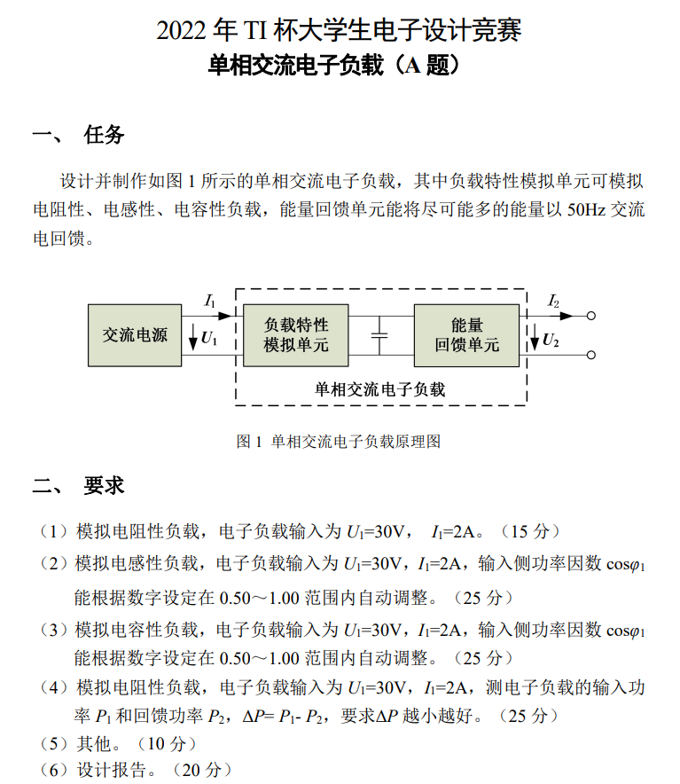
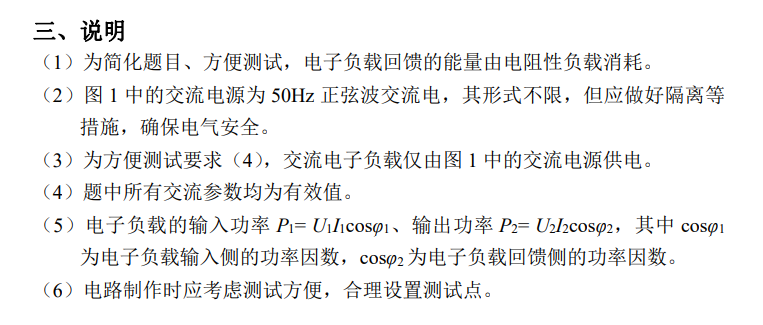
设计报告
系统方案
方案选择
方案一
采用单相全桥整流电路、单相全桥逆变电路级联。使用 MOS 管进行整流工作，进行可控整流，所以此方案可以显著提高系统效率，且系统功率容量大；但是要实现高效率、高功率因数等要求,对实时控制算法的要求较高。
方案二
采用 UCC28019 实现功率因素校正，拓扑采用不控整流与 BOOST-BUCK 级联方案。此方案电路拓扑简单，模拟 IC 控制实现功率因数校正容易；缺点是不可以改变输入电流与电压相位，难以实现负载特性的模拟。
综上所述，因为本系统对控制的灵活性要求高，要实现稳定输入、系统整体高效率与交流输入功率因数精准可调，模拟控制较难实现。方案一使用锁相环能够跟踪锁定输入电压相位，对输入交流电流的瞬时值进行闭环控制，使输入电流与电压同相实现功率因数校正，并且能够改变电压电流的相角差来模拟感性容性负载，但算法难度较大。方案二采用不控整流无法实现功率因数调整。综合考虑题目要求与准备情况，选用方案一。
系统框架
系统以单相 PWM 整流电路与单相逆变电路为主电路拓扑结构，以TMS320F28335 为主控。系统框架如图 1所示。交流输入电压为 30V，输入电流为 2A, PWM 整流器为负载特性模拟单元，逆变器为能量反馈单元。本设计的算法核心在于利用锁相环跟踪锁定输入电压相位，并且通过移相以及 PI 控制算法调节电流环，使输入侧的电流与电压的相位角差值精准可控，能够得到需要的任意角度进而实现对不同特性负载的模拟。
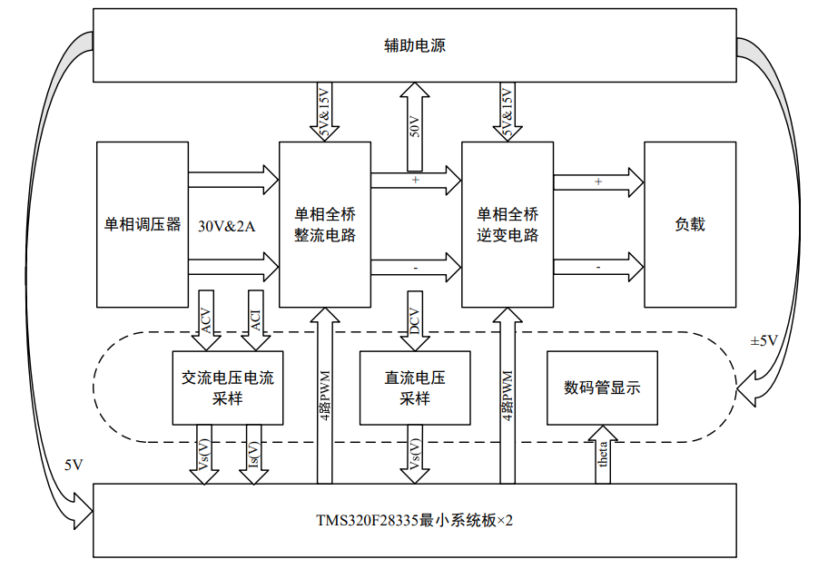
理论分析与计算
能量流动分析
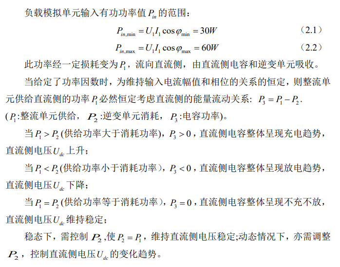
逆变单元功率分析
给定功率因数时，整流单元供给直流侧的功率 P1必然恒定，同时逆变单元采用 SPWM 调制，忽略死区效应以及滤波器压降，则负载上的输出电压可近似为
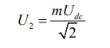
其中 m 为 SPWM 的调制度，则负载 R 上消耗的功率为
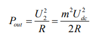
忽略逆变单元的能量损耗，则可将逆变单元交流侧的负载等效折算至直流侧为
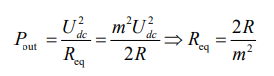
则整个逆变单元及其负载，可近似等效为连接至直流侧的一个可调电阻。
直流侧电压及逆变侧负载选择
逆变单元调制度 m 越高（最高为 1），等效直流电阻 Req 越小；
逆变单元调制度 m 越低（最低为 0），等效直流电阻 Req 越大；
等效直流电阻 R 的调节范围为[2 , R +∞) 。
输入电压交流有效值 30V，则峰值为 42.4V，直流侧电压设定值可取 50V，更保险一些可以取 60V.当直流侧电压取 50V 时，逆变单元最大可消耗的功率应不低于 60W，则
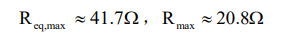
当直流侧电压取 60V 时，逆变单元最大可消耗的功率应不低于 60W，则 电路与程序设计
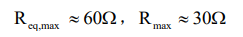
本设计直流侧电压取 50V。
电路与程序设计
器件选型
本系统中的被测交流电源为 30V，硬件实验平台按照 60W 设计，前级负载模拟侧电流可根据实际需求调节，后级能量回馈侧输出峰值电流经计算为2.83A。根据主电路的实际情况，本文选取的 MOSFET 功率开关管的型号为 SUP85N10，其最大耐压为 100V，最大允许的电流值为 85A。由前面所得的电路参数可知，该 MOSFET 的允许电压、电流值远大于电路的实际电压电流值，能够满足主电路的设计需求。
采样电路
交流电流采样设计： 霍尔电流传感器 CSM050LA 交流电压采样设计： 霍尔电压传感器 TBV5/25A 直流电压采样设计： 霍尔电压传感器 TBV5/25A
软件程序
软件程序采用 PWM 触发采样交流输入电压瞬时值以及电流瞬时值，单相交流电压通过软件锁相环采取相位，进而通过移相以及电流环 PI 改变 SPWM 的占空比来稳定输入电流幅值以及相位来实现功率因素调整，进而模拟不同的负载特性。后级通过 PI 稳定直流侧电压。
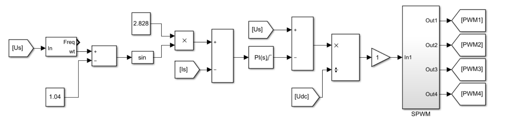
负载模拟单元
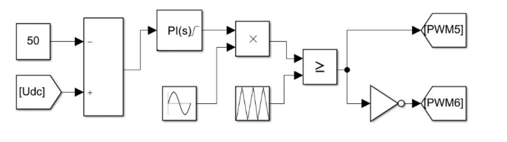
能量反馈单元
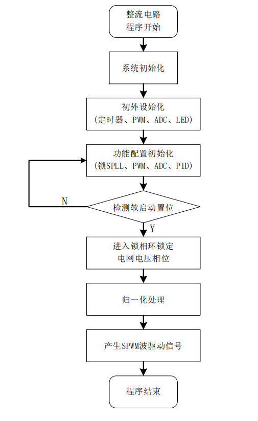
控制流程图
测试结果
实现模拟容性、感性和阻性负载，功率因素在 0.5‑0.998 之间自由调节，输入电流波动率 0.12%，效率 88%，达到赛题要求。 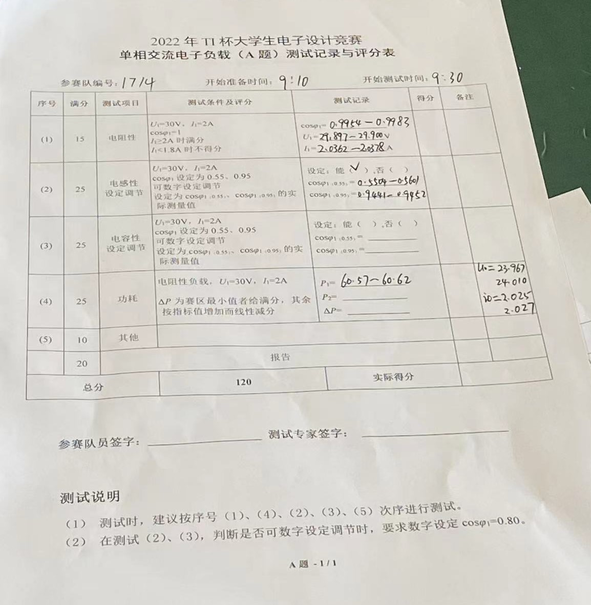
结果分析
由于系统架构设计较为合理，功能电路实现较好，系统较好地实现了题目的要求。由测试结果可知:实时控制算法起到了很好负载特性模拟效果，电流跟随电压特性良好；输入电流稳定可靠，谐波较少，达到题目的要求;系统的整体效率为 83.0%,有待改善；系统具有实时 PF 调节功能，精度达到0.01。
- Posted on:
- August 25, 2022
- Length:
- 1 minute read, 157 words
- Tags:
- hustle-site
- See Also:
- 基于UCC28019的高功率因素电源
- 磁耦合谐振式无线电能传输
- 智能小车电源模块